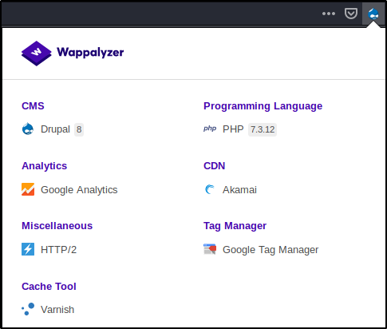
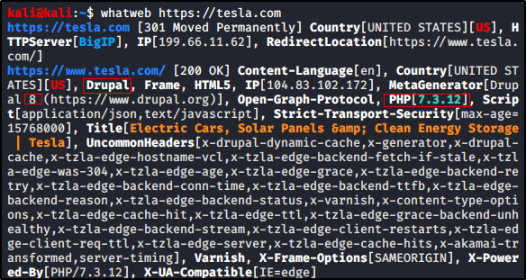

Identifying Website Technologies
BuiltWith:
https://builtwith.com/


Useful info:
Frameworks


CMS (Content Management System):


Wappalyzer:
https://www.wappalyzer.com/
It is a browser add-on to get info about tecnologies used for building/running a website



WhatWeb
https://www.morningstarsecurity.com/research/whatweb
(use “-h” for more usage info)

